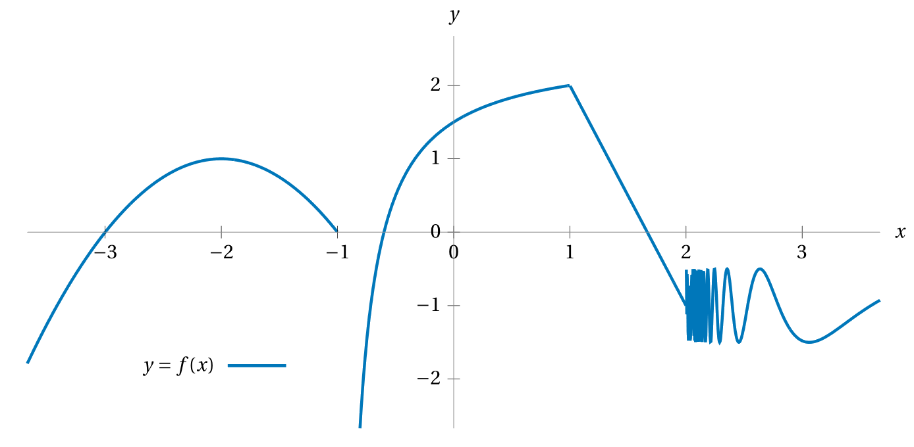

What is an equation for the line tangent to
the graph of the function \(h(\theta) = \sec\Bigl(\sqrt{7\theta}\Bigr)\)
at the point \(\bigl(2, h(2)\bigr)\,?\)
Express the parameters accurate to within \(\pm 0.001\).
Consider the curve defined by the equation
\((xy)^3-2x(x+1)-y=2.\)
Verify that the point \((1,2)\) lies on the curve,
then find an equation of the line
tangent to the curve at that point.
What’s an equation of the line tangent to
the curve defined implicitly by the equation \(\tan(xy) = 1\)
at the point \(\left(\frac{\pi}{2}, \frac{1}{2}\right)?\)
What is a formula for the derivative
of each of the following functions?
For these implicitly defined functions \(y = f(x)\),
find a formula for \(\frac{\mathrm{d}y}{\mathrm{d}x}\)
in terms of \(x\) and \(y.\)
Remember that you can also denote
\(\frac{\mathrm{d}y}{\mathrm{d}x}\)
as either \(y'\) or as \(\dot y.\)
\(\displaystyle x + y + xy + y^2 + x^2 = 5 \)
\(\displaystyle \sin(x)\cos(y) = \tan(y)x \)
\(\displaystyle x^3y^3 = \frac{y}{x} \)
Recall that trig functions like sine
expect their argument in radian measure.
Define \(\mathrm{degsin}\) to be sine function
that expects its argument in degree measure.
I.e. for \(f(x) = \frac{\pi}{180}x\) we have
\(\mathrm{degsin} = \sin \circ f\,.\)
What is the derivative of \(\mathrm{degsin}\,?\)
We denote the \(n^\text{th}\) derivative
of a function \(f\) as \(f^{(n)}.\)
For example, \(f^{(13)}(x)\) denotes the thirteenth derivative of \(f,\)
and denotes it better than \(f'''''''''''''(x).\)
Consider the function \(f(x) = \frac{1}{1-x}.\)
What is the first derivative of this function?
What is the fourth derivative of this function?
What is a formula for \(f^{(n)}(x)?\)
The quotient rule
is superfluous;
it’s simply a combination of the power rule,
product rule, and chain rule.
Prove this by noticing that \(f/g = f\times(g)^{-1}\)
and taking the derivative of the latter.
Given that \(F(x) = f\bigl(g(x)\bigr)\)
and the following information, what is \(F'(1)\)?
\(g(1) = 2\)
\(g'(1) = 3\)
\(f(1) = 5\)
\(f'(1) = 7\)
\(f(2) = 11\)
\(f'(2) = 1\)
Estimating, based on the graph, what are the values of the following?

\(f(-2)\)
\(f'(-2)\)
\(f''(-2)\)
\(f'(0)\)
\(f(2)\)
\(f'(2)\)
\(f(3)\)
\(f'(3)\)
Challenges
So far we’ve been taking the fact that
the derivative of sine is cosine as something we just know.
But this fact is not manifest.
It follows from the definition of the derivative as a limit.
Use the definition of the derivative as a limit
to prove that the derivative of sine is cosine.
Hints: you’ll likely want to use these two facts in your proof:
\[
\sin(a+b) = \sin(a)\cos(b) + \cos(a)\sin(b)
\qquad\text{and}\qquad
\lim_{x \to 0} \frac{\cos(x)-1}{x} = 0
\]
The first of these is the sum-of-angles formula for sine
(do you remember how to prove that?),
and the second follows from \(\lim_{x \to 0}\frac{\sin(x)}{x} = 1.\)